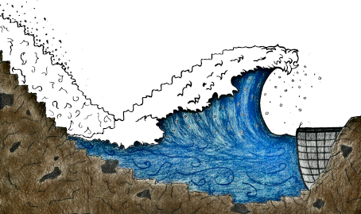

Test
Some title
other
Some text with an image

Pandoc is a Haskell library for converting from one markup format to another, and a command-line tool that uses this library.
Pandoc can convert between numerous markup and word processing formats, including, but not limited to, various flavors of Markdown, HTML, LaTeX and Word docx. For the full lists of input and output formats, see the –from and –to options below. Pandoc can also produce PDF output: see creating a PDF, below.
Pandoc’s enhanced version of Markdown includes syntax for tables, definition lists, metadata blocks, footnotes, citations, math, and much more. See below under Pandoc’s Markdown.
Pandoc has a modular design: it consists of a set of readers, which parse text in a given format and produce a native representation of the document (an abstract syntax tree or AST), and a set of writers, which convert this native representation into a target format. Thus, adding an input or output format requires only adding a reader or writer. Users can also run custom pandoc filters to modify the intermediate AST.
Because pandoc’s intermediate representation of a document is less expressive than many of the formats it converts between, one should not expect perfect conversions between every format and every other. Pandoc attempts to preserve the structural elements of a document, but not formatting details such as margin size. And some document elements, such as complex tables, may not fit into pandoc’s simple document model. While conversions from pandoc’s Markdown to all formats aspire to be perfect, conversions from formats more expressive than pandoc’s Markdown can be expected to be lossy.